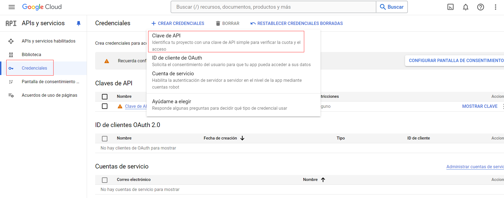
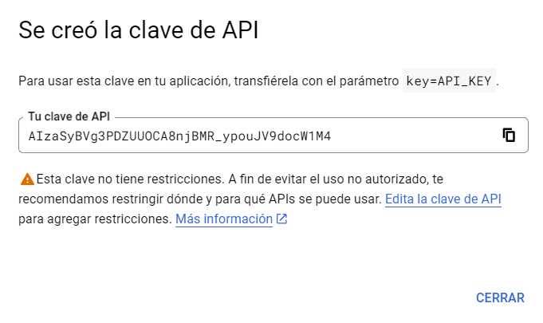
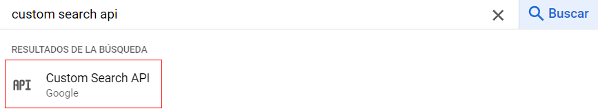
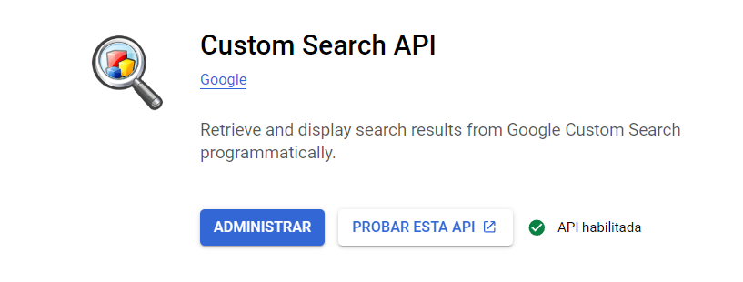
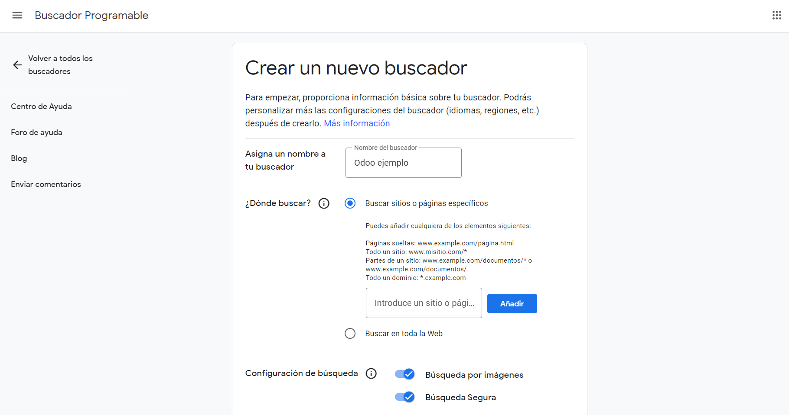
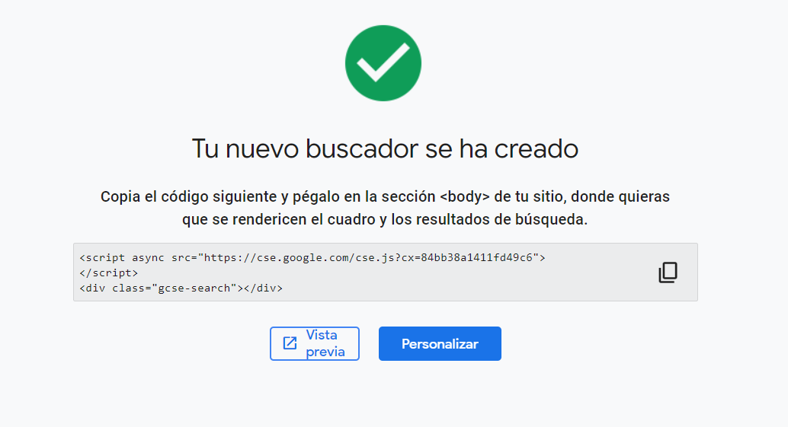
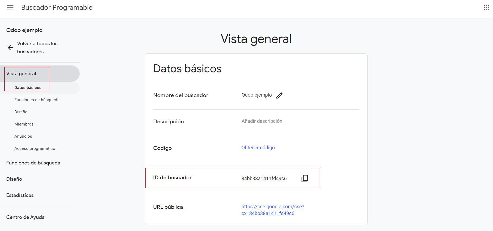
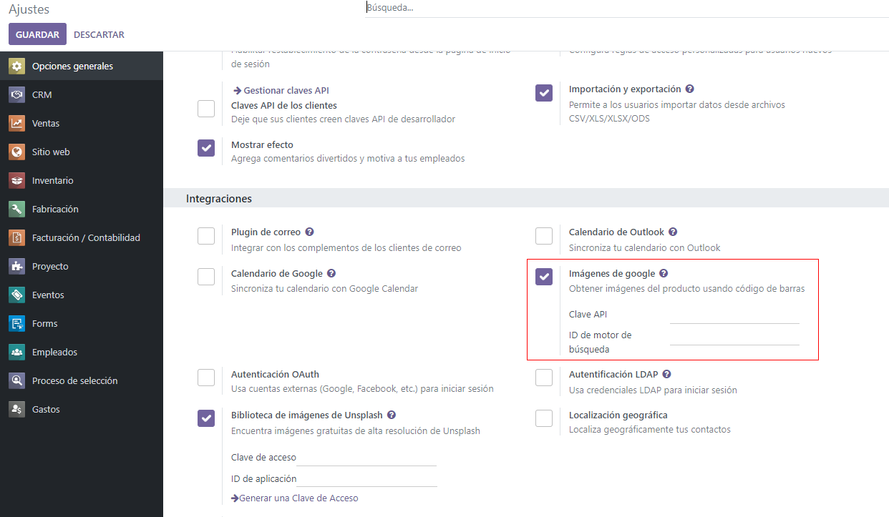
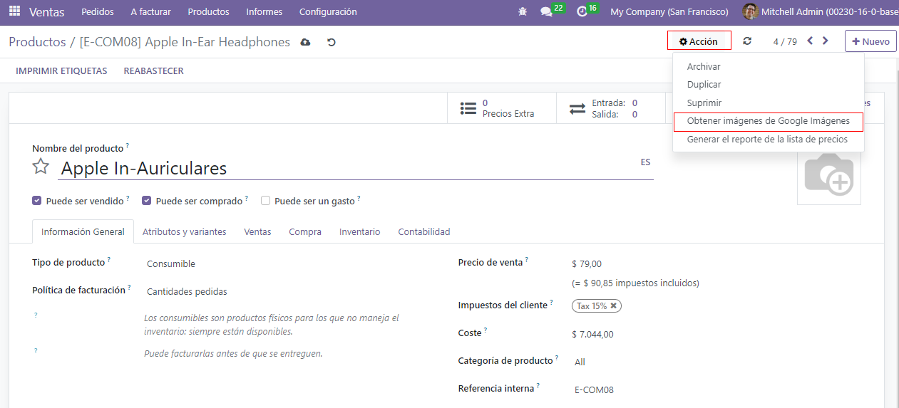
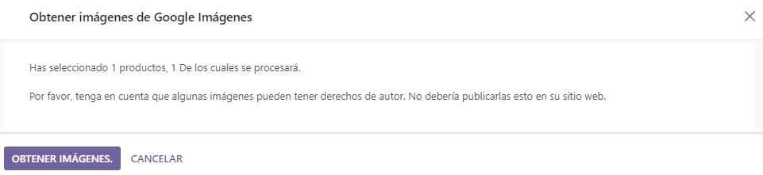

Product images with Google Images¶
Having appropriate product images in Odoo is useful for a number of reasons. However, if a lot of products need images, assigning them can become incredibly time-consuming.
Fortunately, by configuring the Google Custom Search API within an Odoo database, finding product images for products (based on their barcode) is extremely efficient.
Configuration¶
In order to utilize Google Custom Search within an Odoo database, both the database and the Google API must be properly configured.
Note
Free Google accounts allow users to select up to 100 free images per day. If a higher amount is needed, a billing upgrade is required.
Google API dashboard¶
Go to the Google Cloud Platform API & Services page to generate Google Custom Search API credentials. Then, log in with a Google account. Next, agree to their Terms of Service by checking the box, and clicking Agree and Continue.
From here, select (or create) an API project to store the credentials. Start by giving it a memorable Project Name, select a Location (if any), then click Create.
With the Credentials option selected in the left sidebar, click Create Credentials, and select API key from the drop-down menu.
Doing so reveals an API key created pop-up window, containing a custom API key. Copy and save Your API key in the pop-up window – it will be used later. Once the key is copied (and saved for later use), click Close to remove the pop-up window.
On this page, search for
Custom Search API, and select it.From the Custom Search API page, enable the API by clicking Enable.

Google Programmable Search dashboard¶
Next, go to Google Programmable Search Engine, and click either of the Get started buttons. Log in with a Google account, if not already logged in.
On the Create a new search engine form, fill out the name of the search engine, along with what the engine should search, and be sure to enable Image Search and SafeSearch.
Validate the form by clicking Create.
Doing so reveals a new page with the heading: Your new search engine has been created.
From this page, click Customize to open the page. Then, copy the ID in the Search engine ID field. This ID is needed for the Odoo configuration.

Odoo¶
In the Odoo database, go to the and scroll to the Integrations section. From here, check the box beside Google Images. Then, click Save.
Next, return to the , and scroll to the Integrations section. Then, enter the API Key and Search Engine ID in the fields beneath the Google Images feature.
Click Save.
Product images in Odoo with Google Custom Search API¶
Adding images to products in Odoo can be done on any product or product variant. This process can be completed in any Odoo application that provides access to product pages (e.g. Sales app, Inventory app, etc.).
Below is a step-by-step guide detailing how to utilize the Google Custom Search API to assign images to products in Odoo using the Odoo Sales application:
Navigate to the Products page in the Sales app (). Or, navigate to the Product Variants page in the Sales app ().
Select the desired product that needs an image.
Note
Only products (or product variants) that have a barcode, but not an image, are processed.
If a product with one or more variants is selected, each variant that matches the aforementioned criteria is processed.
Click the Action ⚙️ (gear) icon on the product page, and select Get Pictures from Google Images from the menu that pops up.
On the pop-up window that appears, click Get Pictures.
Once clicked, the image(s) will appear incrementally.
Note
Only the first 10 images are fetched immediately. If you selected more than 10, the rest are fetched as a background job.
The background job processes about 100 images in a minute. If the quota authorized by Google (either with a free or a paid plan) is reached, the background job puts itself on hold for 24 hours. Then, it will continue where it stopped the day before.